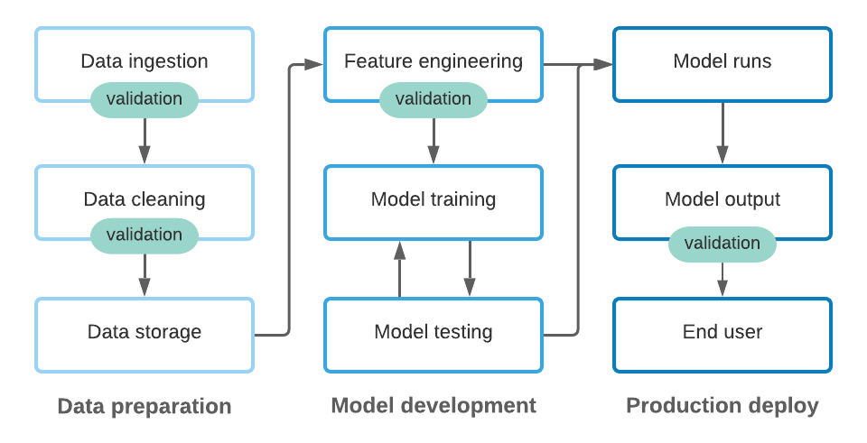

flowchart LR
import --> process --> Modeling
Ensuring that data pipelines are efficient, reliable, and produce high-quality data for ML systems
Warning
The scenarios are designed to be a bit vague so you can feel free to make certain assumptions regarding the scenario or even identify additional questions that need to be answered.
Be sure to:
Short for Data Operations, consists of key concepts for designing, implementing, and managing data workflows.
Note
The goal is to implement these concepts into a series of (preferrably automated) steps that are efficient, reliable, and produce high-quality data. We refer to this as a data pipeline.
flowchart LR
import --> process --> Modeling
Often, all 3 steps are performed in a single script!
flowchart LR
subgraph dataops[DataOps]
direction LR
subgraph ingest
end
subgraph process
end
subgraph validate
end
subgraph version
end
subgraph storage
end
end
ingest --> process --> validate --> version --> storage
dataops --> Modeling
Enables…
When designing data pipelines, there are two primary paradigms:
Note
These paradigms represent distinct approaches to organizing and processing data as it flows through pipelines, each with its own strengths and trade-offs. Choosing between ETL and ELT (or a hybrid approach) requires an understanding of your organization’s technical infrastructure, data requirements, and use cases
The ETL paradigm embodies a traditional, structured approach to data pipelines. It follows a linear process:
flowchart LR
ob1(Raw data source) --> processing[Data processing]
ob2(Raw data source) --> processing
ob3(Raw data source) --> processing
processing --> id3[(Data storage)]
Tip
ETL pipelines focus on preparing high-quality, ready-to-use data before it enters the storage system.
The ELT paradigm, a more modern approach, inverts the transformation and loading steps:
flowchart LR
ob1(Raw data source) --> id3[(Data storage)]
ob2(Raw data source) --> id3
ob3(Raw data source) --> id3
id3 --> processing[Data processing] --> id3
Tip
In ELT workflows, the data ingestion phase emphasizes rapid loading of raw data into storage, enabling flexibility for later transformations.
It depends!
| Aspect | ETL | ELT |
|---|---|---|
| Data Transformation | Before loading into storage | After loading into storage |
| Storage Requirements | Lower, as only processed data is stored | Higher, as raw data is retained |
| Processing Time | Slower ingestion due to upfront transformations | Faster ingestion with deferred transformations |
| Flexibility | Limited; transformations are predefined | High; transformations can be ad hoc |
| Infrastructure | Suitable for legacy systems or traditional data warehouses | Ideal for modern, scalable systems |
Choosing the Right Paradigm
Both paradigms have their strengths, and many organizations blend elements of each.
Say we’re going to build an ML system that leverages Youtube video titles, transcripts, views, likes, and comments.
flowchart LR
subgraph ingest[Data Ingestion]
direction LR
subgraph p1[Ingest Video IDs]
end
subgraph p2[Ingest Video Stats]
end
subgraph p3[Ingest Video Transcript]
end
end
p1 --> p2
p1 --> p3
ingest --> process(Process Raw Data)
process --> Validate --> Version --> data[(Data storage)]
Question
Based on this visual, would you say this is more ETL or ELT?
flowchart LR
d1[Dataset 1] --> Data
d2[Dataset 2] --> Data
d3[Dataset 3] --> Data
For example, our Youtube data pipeline requires…
flowchart LR
subgraph ingest[Data Ingestion]
direction LR
subgraph p1[Ingest Video IDs]
end
subgraph p2[Ingest Video Stats]
end
subgraph p3[Ingest Video Transcript]
end
end
p1 --> p2
p1 --> p3
| Source | Advantages | Disadvantages | When to Use |
|---|---|---|---|
| Databases | Structured, queryable, reliable | May require SQL knowledge, scaling issues | For transactional data and structured data storage |
| Files (CSV, JSON, etc.) | Easy to share, human-readable, flexible formats | Prone to inconsistencies, not scalable for large data | For small datasets or ad hoc data exchanges |
| APIs | Real-time data access, standardized data retrieval | Rate limits, dependency on external providers | For integrating third-party services and dynamic data sources |
| Data Warehouses | Optimized for analytics, scalable, supports large datasets | Expensive, requires maintenance | For business intelligence and large-scale data analysis |
| Data Lakes | Can store structured and unstructured data, cost-effective | Complex data governance, slower querying | For big data storage and exploratory analysis |
| Streaming Data | Real-time data processing, supports event-driven architectures | Requires complex infrastructure, higher resource needs | For real-time analytics and IoT applications |
| Manual Entry | Customizable, quick for small-scale data entry | Error-prone, time-consuming | For small, controlled datasets where automation is not feasible |
The frequency of data ingestion — batch or streaming — determines how data flows into the ML system.
Collects data in chunks or intervals, such as on a daily cadence.
flowchart LR
subgraph Monday
direction TB
ob1(observation) --> id1[(Data source)]
ob2(observation) --> id1
ob3(observation) --> id1
end
subgraph Tuesday
direction TB
ob4(observation) --> id2[(Data source)]
ob5(observation) --> id2
ob6(observation) --> id2
end
subgraph Wednesday
direction TB
ob7(observation) --> id3[(Data source)]
ob8(observation) --> id3
ob9(observation) --> id3
end
processing[Batch data processing]
downstream[Downstream ML system processes]
Monday --> processing
Tuesday --> processing
Wednesday --> processing
processing --> downstream
Each observation is collected as it comes in and then feeds that data to downstream ML systems and, simoultaneously, to a database for longterm storage.
flowchart LR
ob1(observation) --> processing[Real-time data processing]
ob2(observation) --> processing
ob3(observation) --> processing
ob4(observation) --> processing
ob5(observation) --> processing
processing --> downstream[Downstream ML system processes]
processing --> id3[(Database)]
Imagine you are building an ML system for a ride-sharing company to predict rider demand in real-time.
Scenario Details:
Questions to Consider:
“Poor data quality is Enemy #1 to the widespread, profitable use of machine learning, and for this reason, the growth of machine learning increases the importance of data cleansing and preparation. The quality demands of machine learning are steep, and bad data can backfire twice – first when training predictive models and second in the new data used by that model to inform future decisions.”
Why it matters:
What data quality concerns would you look for in the Youtube data?
| channel_id | video_id | datetime | title | views | likes | comments | transcript | |
|---|---|---|---|---|---|---|---|---|
| 0 | UCgUueMmSpcl-aCTt5CuCKQw | wzrIKGcOlsU | 2025-01-13T17:00:24Z | Rory McIlroy has another gear. | 3142 | 304 | 16 | I've never seen you go after the ball like thi... |
| 1 | UCgUueMmSpcl-aCTt5CuCKQw | Pz42jFngEzM | 2025-01-13T03:25:25Z | Thank you. 1 Million ❤️ | 59474 | 6757 | 428 | [Music] so sick let's go [Music] |
| 2 | UCgUueMmSpcl-aCTt5CuCKQw | fSHh01YT0-Q | 2025-01-07T18:50:32Z | Tiger Woods hits the ball off the heel. | 64116 | 2055 | 30 | over the course of my career I've always hit t... |
| 3 | UCgUueMmSpcl-aCTt5CuCKQw | erzLT7fy2r0 | 2025-01-07T17:56:07Z | Tiger Woods liked my golf swing! | 122584 | 4486 | 76 | what's wrong with that yeah that came off you ... |
| 4 | UCgUueMmSpcl-aCTt5CuCKQw | 3O08SnyZ88U | 2025-01-07T17:07:04Z | Tiger Woods teaches me how to hit it straight! | 555884 | 18286 | 142 | what did you do in your career when you had a ... |
Domain knowledge informs the strategies used to resolve data quality issues.
What feature engineering could we do on the Youtube data?
| channel_id | video_id | datetime | title | views | likes | comments | transcript | |
|---|---|---|---|---|---|---|---|---|
| 0 | UCgUueMmSpcl-aCTt5CuCKQw | wzrIKGcOlsU | 2025-01-13T17:00:24Z | Rory McIlroy has another gear. | 3142 | 304 | 16 | I've never seen you go after the ball like thi... |
| 1 | UCgUueMmSpcl-aCTt5CuCKQw | Pz42jFngEzM | 2025-01-13T03:25:25Z | Thank you. 1 Million ❤️ | 59474 | 6757 | 428 | [Music] so sick let's go [Music] |
| 2 | UCgUueMmSpcl-aCTt5CuCKQw | fSHh01YT0-Q | 2025-01-07T18:50:32Z | Tiger Woods hits the ball off the heel. | 64116 | 2055 | 30 | over the course of my career I've always hit t... |
| 3 | UCgUueMmSpcl-aCTt5CuCKQw | erzLT7fy2r0 | 2025-01-07T17:56:07Z | Tiger Woods liked my golf swing! | 122584 | 4486 | 76 | what's wrong with that yeah that came off you ... |
| 4 | UCgUueMmSpcl-aCTt5CuCKQw | 3O08SnyZ88U | 2025-01-07T17:07:04Z | Tiger Woods teaches me how to hit it straight! | 555884 | 18286 | 142 | what did you do in your career when you had a ... |
Say we are a Youtube content creator and we want to use this data to build a model that will predict the number of likes a future video will get based on the title, text, comments, etc. Are there any concerns with this?
| channel_id | video_id | datetime | title | views | likes | comments | transcript | |
|---|---|---|---|---|---|---|---|---|
| 0 | UCgUueMmSpcl-aCTt5CuCKQw | wzrIKGcOlsU | 2025-01-13T17:00:24Z | Rory McIlroy has another gear. | 3142 | 304 | 16 | I've never seen you go after the ball like thi... |
| 1 | UCgUueMmSpcl-aCTt5CuCKQw | Pz42jFngEzM | 2025-01-13T03:25:25Z | Thank you. 1 Million ❤️ | 59474 | 6757 | 428 | [Music] so sick let's go [Music] |
| 2 | UCgUueMmSpcl-aCTt5CuCKQw | fSHh01YT0-Q | 2025-01-07T18:50:32Z | Tiger Woods hits the ball off the heel. | 64116 | 2055 | 30 | over the course of my career I've always hit t... |
| 3 | UCgUueMmSpcl-aCTt5CuCKQw | erzLT7fy2r0 | 2025-01-07T17:56:07Z | Tiger Woods liked my golf swing! | 122584 | 4486 | 76 | what's wrong with that yeah that came off you ... |
| 4 | UCgUueMmSpcl-aCTt5CuCKQw | 3O08SnyZ88U | 2025-01-07T17:07:04Z | Tiger Woods teaches me how to hit it straight! | 555884 | 18286 | 142 | what did you do in your career when you had a ... |
Imagine you are building a customer churn prediction model for a subscription-based video streaming service. The goal is to process and clean incoming data to prepare it for machine learning.
What types of validation would our Youtube data pipeline benefit from?
| channel_id | video_id | datetime | title | views | likes | comments | transcript | |
|---|---|---|---|---|---|---|---|---|
| 0 | UCgUueMmSpcl-aCTt5CuCKQw | wzrIKGcOlsU | 2025-01-13T17:00:24Z | Rory McIlroy has another gear. | 3142 | 304 | 16 | I've never seen you go after the ball like thi... |
| 1 | UCgUueMmSpcl-aCTt5CuCKQw | Pz42jFngEzM | 2025-01-13T03:25:25Z | Thank you. 1 Million ❤️ | 59474 | 6757 | 428 | [Music] so sick let's go [Music] |
| 2 | UCgUueMmSpcl-aCTt5CuCKQw | fSHh01YT0-Q | 2025-01-07T18:50:32Z | Tiger Woods hits the ball off the heel. | 64116 | 2055 | 30 | over the course of my career I've always hit t... |
| 3 | UCgUueMmSpcl-aCTt5CuCKQw | erzLT7fy2r0 | 2025-01-07T17:56:07Z | Tiger Woods liked my golf swing! | 122584 | 4486 | 76 | what's wrong with that yeah that came off you ... |
| 4 | UCgUueMmSpcl-aCTt5CuCKQw | 3O08SnyZ88U | 2025-01-07T17:07:04Z | Tiger Woods teaches me how to hit it straight! | 555884 | 18286 | 142 | what did you do in your career when you had a ... |
Column Existence Validation: Verify that all required columns (channel_id, video_id, datetime, title, views, likes, comments, transcript, and transcript_length) are present in the dataset.
Data Type Validation: Check that each column contains values of the expected data type, such as Object for textual data (channel_id, video_id, title, and transcript), Timestamp for date-related fields, and int64 for numerical fields (views, likes, comments, and transcript_length).
Null Value Validation: Confirm that no empty or null values exist in the critical columns.
Range Check: Check that the numeric columns are all zero or positive integers. Or maybe we want to ensure there are at least 100 characters in the transcript.
…
Validation should be incorporated at multiple stages throughout the ML system.
Data versioning
%%{init: {'gitGraph': {'mainBranchName': 'Youtube Data'}} }%%
gitGraph
commit id: "v1.0.0"
commit id: "v1.0.1"
commit id: "v1.0.2"
branch 'new feature'
commit id: "add new feature"
checkout 'Youtube Data'
merge 'new feature'
commit id: "v1.1.0"
Data lineage
flowchart LR db1[(Data<br>source 1)] --> p1[/processing<br>step 1/] p1 --> p2[/processing<br>step 2/] db2[(Data<br>source 2)] --> p2 p2 --> p3[/processing<br>step 3/] db3[(Data<br>source 3)] --> p3 p3 --> p4[/processing<br>step 4/] p4 --> p5[/processing<br>step 5/] p5 --> db4[(Final<br>processed<br>data)]
Important
Together, data versioning and lineage create a transparent, reliable foundation for machine learning systems. They enable teams to meet regulatory requirements, mitigate risks, and streamline collaboration, making these practices indispensable in modern DataOps workflows.
| channel_id | video_id | datetime | title | views | likes | comments | transcript | |
|---|---|---|---|---|---|---|---|---|
| 0 | UCgUueMmSpcl-aCTt5CuCKQw | wzrIKGcOlsU | 2025-01-13T17:00:24Z | Rory McIlroy has another gear. | 3142 | 304 | 16 | I've never seen you go after the ball like thi... |
| 1 | UCgUueMmSpcl-aCTt5CuCKQw | Pz42jFngEzM | 2025-01-13T03:25:25Z | Thank you. 1 Million ❤️ | 59474 | 6757 | 428 | [Music] so sick let's go [Music] |
| 2 | UCgUueMmSpcl-aCTt5CuCKQw | fSHh01YT0-Q | 2025-01-07T18:50:32Z | Tiger Woods hits the ball off the heel. | 64116 | 2055 | 30 | over the course of my career I've always hit t... |
| 3 | UCgUueMmSpcl-aCTt5CuCKQw | erzLT7fy2r0 | 2025-01-07T17:56:07Z | Tiger Woods liked my golf swing! | 122584 | 4486 | 76 | what's wrong with that yeah that came off you ... |
| 4 | UCgUueMmSpcl-aCTt5CuCKQw | 3O08SnyZ88U | 2025-01-07T17:07:04Z | Tiger Woods teaches me how to hit it straight! | 555884 | 18286 | 142 | what did you do in your career when you had a ... |
You are tasked with designing a churn prediction model for a subscription-based video streaming service.
Scenario Details:
Questions to Consider:
BANA 7075